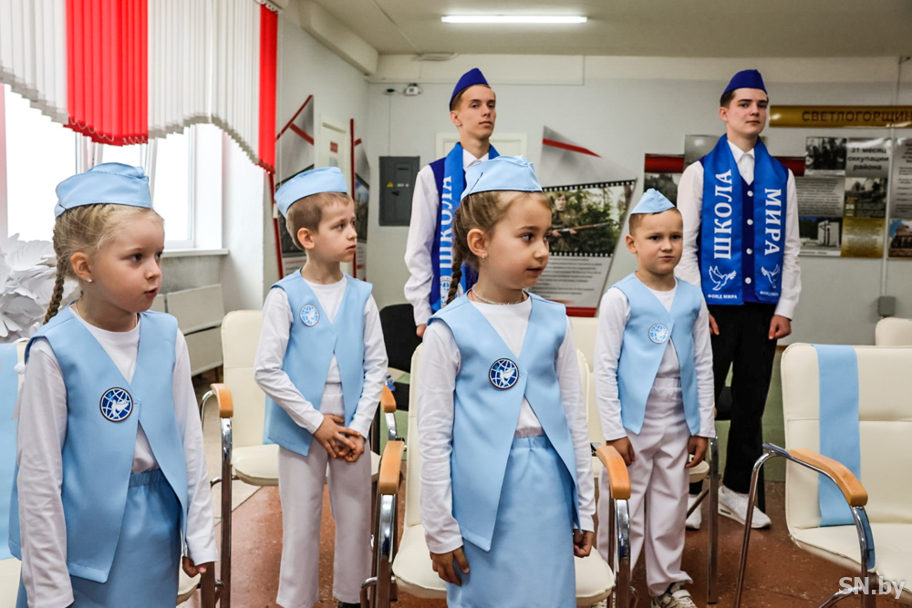
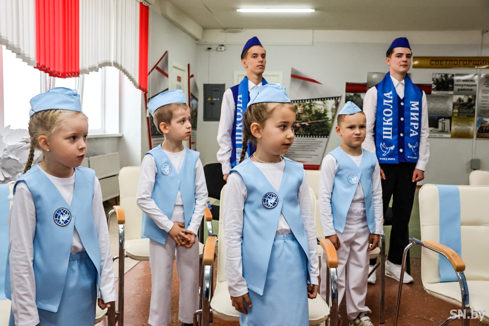

1921-1942: Начальный период
1942-1943: Коренной перелом
1944: Освобождение территории СССР
1945: Победный год
22 июня 1941 года нацистская Германия вероломно напала на СССР. Началась Великая Отечественная война. В этот период советские войска вели тяжелые оборонительные бои, сдерживая натиск врага.
Ключевые события:
- Героическая оборона Брестской крепости (22 июня - 23 июля 1941)
- Смоленское сражение (10 июля - 10 сентября 1941)
- Оборона Ленинграда и начало блокады (8 сентября 1941)
- Битва за Москву (30 сентября 1941 - 20 апреля 1942)
- Ржевская битва (8 января 1942 - 31 марта 1943)
Несмотря на тяжелые потери и отступление, советские войска сумели остановить продвижение немецких войск на ключевых направлениях и развеять миф о "блицкриге".
В этот период произошел коренной перелом в ходе войны. Советские войска перехватили стратегическую инициативу и перешли от обороны к наступлению.
Ключевые события:
- Сталинградская битва (17 июля 1942 - 2 февраля 1943)
- Прорыв блокады Ленинграда (операция "Искра", 12-30 января 1943)
- Курская битва (5 июля - 23 августа 1943)
- Битва за Днепр (24 августа - 23 декабря 1943)
- Тегеранская конференция (28 ноября - 1 декабря 1943)
После победы под Сталинградом и на Курской дуге стратегическая инициатива окончательно перешла к Красной Армии. Начался период освобождения советских территорий от захватчиков.
В 1944 году советские войска провели ряд успешных наступательных операций, в результате которых была освобождена большая часть территории СССР.
Ключевые события:
- Снятие блокады Ленинграда (27 января 1944)
- Крымская наступательная операция (8 апреля - 12 мая 1944)
- Операция "Багратион" - освобождение Белоруссии (23 июня - 29 августа 1944)
- Львовско-Сандомирская операция (13 июля - 29 августа 1944)
- Ясско-Кишиневская операция (20-29 августа 1944)
- Открытие второго фронта в Европе (6 июня 1944)
К началу осени 1944 года была полностью освобождена территория СССР, советские войска вступили в страны Восточной Европы.
Завершающий этап войны, в ходе которого был окончательно разгромлен нацистский режим в Германии.
Ключевые события:
- Висло-Одерская операция (12 января - 3 февраля 1945)
- Ялтинская конференция (4-11 февраля 1945)
- Берлинская операция (16 апреля - 8 мая 1945)
- Капитуляция Германии (8-9 мая 1945)
- Потсдамская конференция (17 июля - 2 августа 1945)
- Вступление СССР в войну с Японией (9 августа - 2 сентября 1945)
- Капитуляция Японии (2 сентября 1945) - завершение Второй мировой войны
9 мая 1945 года советский народ одержал победу в Великой Отечественной войне, внеся решающий вклад в разгром нацистской Германии и её союзников.

 
